Playground aberto · HTML, CSS e JS puro
46 experimentos de jogos 3D, ferramentas, música e IA — tudo roda direto no navegador, sem instalar nada.
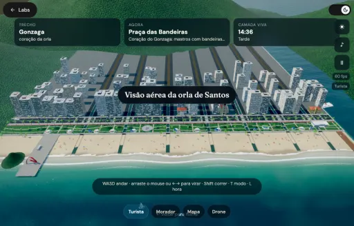
Reconstrução procedural navegável da orla: voo aéreo, walk pelos jardins e canais 1–7, do José Menino à Ponta da Praia
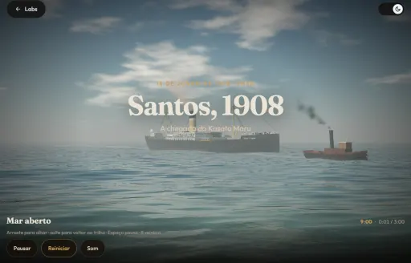
Filme 3D no navegador: o Kasato Maru atraca no Porto de Santos com 781 imigrantes japoneses
Vitrine 3D do DualSense: três edições limitadas, rotação por arraste, transições em WebGPU e teste de controle real (Gamepad API, vibração)
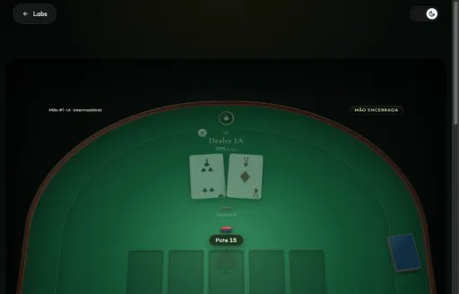
Texas Hold'em 3D contra 1 a 3 rivais de IA: potes paralelos, fichas, cartas com flip e um mestre que ensina ranking, blinds e pot odds
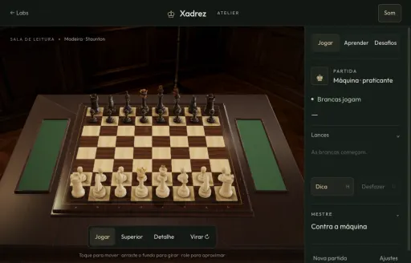
Atelier 3D em Babylon.js: peças Staunton de marfim e ébano, reflexos PBR e um mestre que ensina a jogar
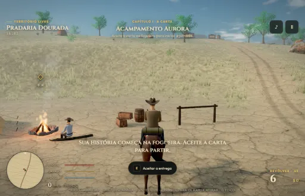
Faroeste 3D em three.js: céu físico, rochas fotogramétricas, galope por serras, cânions e pradarias
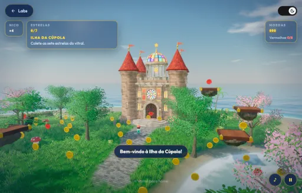
Platformer 3D cinematográfico: Nico, câmera orbital, pulo triplo e sete estrelas no vitral
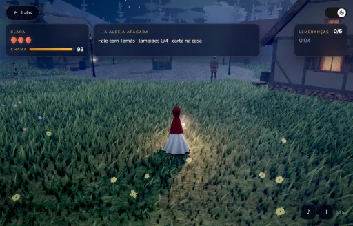
Conto 3D hiper-realista: casas detalhadas, Clara PBR e o primeiro sol em Vale-da-Bruma
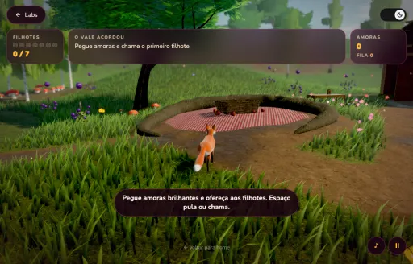
Vale 3D hiper-realista: seja a raposinha, colete amoras, resgate os filhotes e leve todos ao piquenique
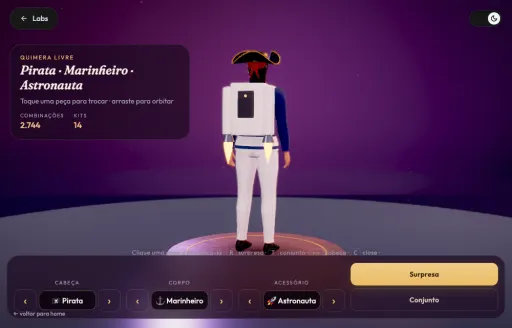
Ateliê 3D relaxante: misture cabeça, corpo e acessórios de pirata, marinheiro, astronauta, guerreiro e outros
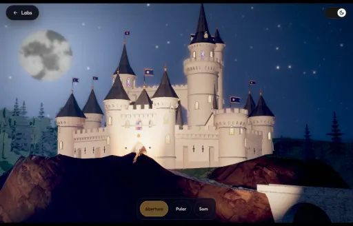
Abertura cinematográfica e passeio em 3ª pessoa: recolha 6 estrelas caídas e reacenda o castelo sob a lua
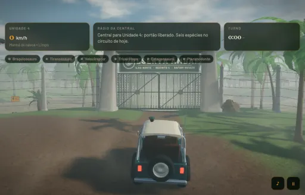
Safari 3D hiper-realista: jipe, dinossauros com crânios orgânicos e diário de campo
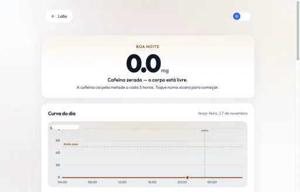
Companheiro de cafeína: registre o café, veja a curva de absorção e eliminação no corpo e a que horas parar para dormir
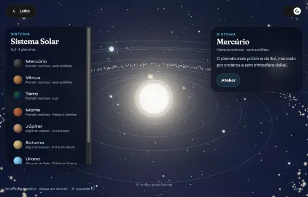
Sistema Solar em 3D com órbitas reais de Kepler: planetas e luas na posição de hoje e controle do tempo
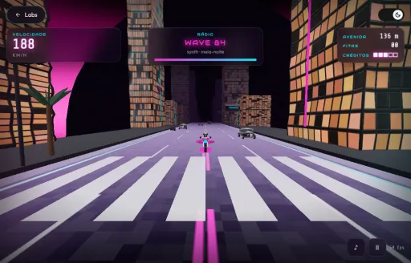
Avenida anos 80 com física de moto real: torque, marchas, ABS e inclinação — néon, synthwave e fitas VHS
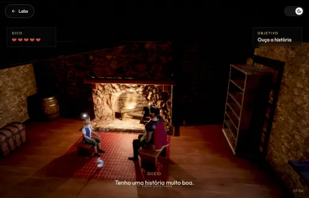
Aventura 3D em terceira pessoa: Dico e o macaco Teco cruzam o mar num galeão até o castelo para resgatar Camila
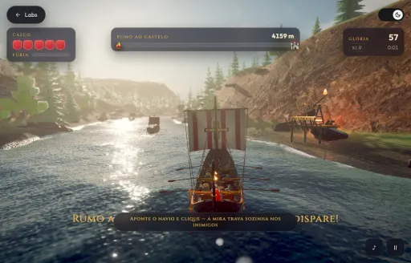
Aventura medieval: drakkar com leme, inércia e ritmo de remo realistas rio abaixo, barcos, torres e o resgate no castelo
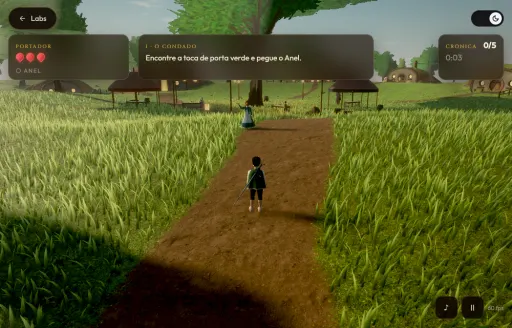
Aventura 3D em three.js inspirada no primeiro filme: o Condado, a fuga dos Cavaleiros, o vale élfico, as minas e o Monte da Visão
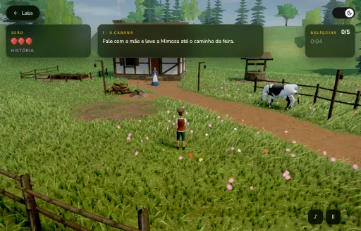
Conto 3D completo: venda a Mimosa, suba o pé de feijão, roube os tesouros do castelo e corte o caule antes do gigante
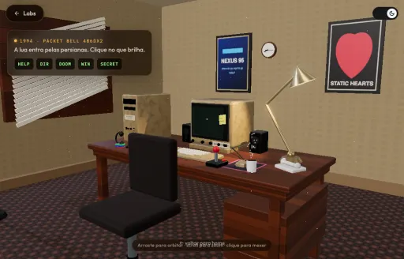
Quarto retrô 3D: ligue o 486, insira o disquete SECRET e mexa em cada objeto da mesa
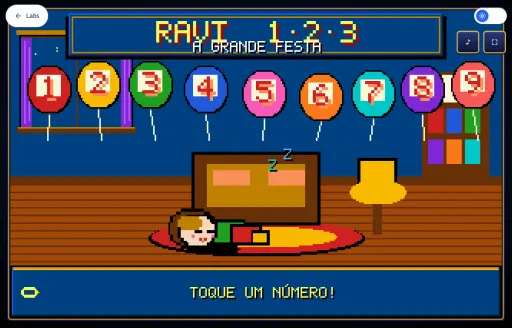
Toque os números e ajude o Ravi a montar a festa surpresa — feito para crianças pequenas.
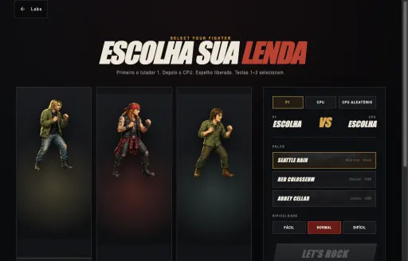
Luta 2D cinematográfica com lendas do rock, combos, especiais e controle touch
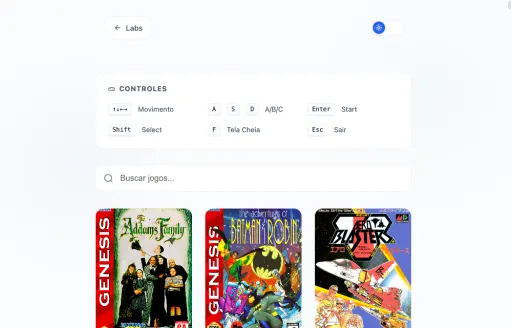
Emulador de Mega Drive online com suporte a ROMs e efeitos CRT
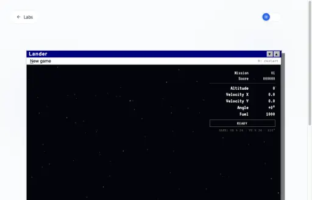
Pouse o Módulo Lunar da Apollo com física real: 1,62 m/s², motor de 45 kN acelerável e propelente em kg
Platformer estilo SNES — o macaquinho do lenço vermelho, canhões-barril e o Rei Croco
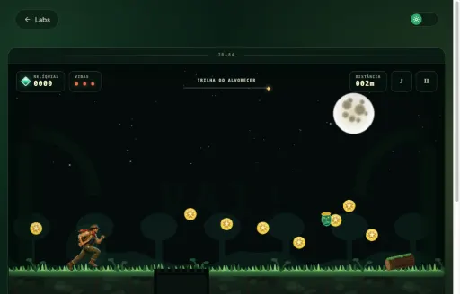
Aventura estilo Pitfall com gráficos PixiJS, física de plataforma e obstáculos
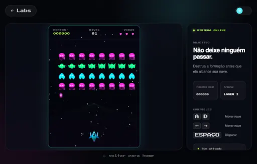
Arcade clássico com visual cyberpunk, partículas e efeitos neon
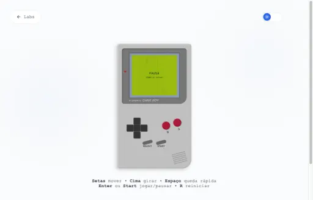
O clássico de blocos com visual de Game Boy e regras modernas: SRS, peça guardada, sombra e T-spin
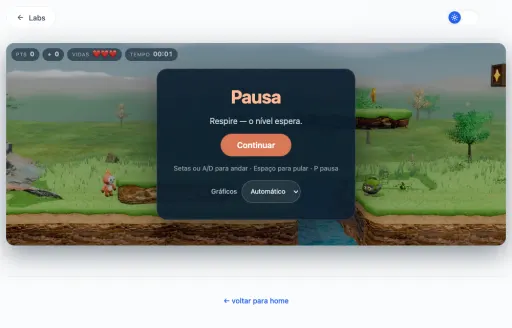
Plataforma 3D em WebGL: colete faíscas, pule nos musgosos e alcance o estandarte no fim da fase
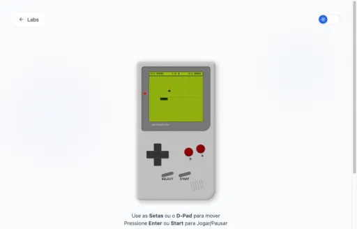
Clássico jogo da cobrinha com visual de console portátil dos anos 90
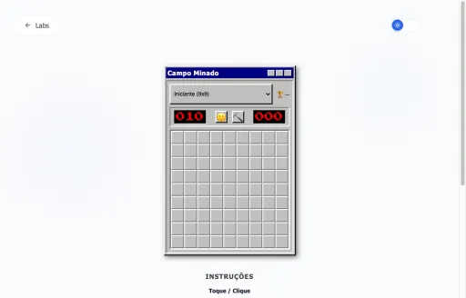
Clássico jogo de estratégia com estética retrô do Windows 95
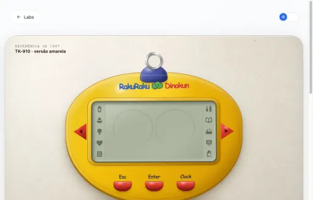
Réplica do Dinkie Dino de 1997 — mesmo hardware, jan-ken-po e ar-condicionado
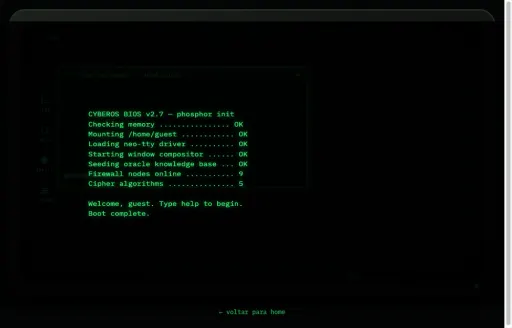
SO retrô/hacker no browser: janelas arrastáveis e redimensionáveis, terminal explorável, firewall breach, Oracle e cifrador
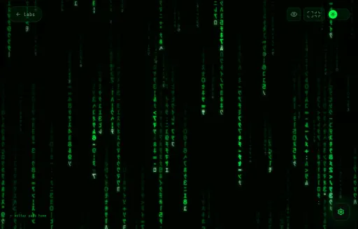
Chuva digital fiel ao filme, com katakana espelhado, bloom CRT e controles completos
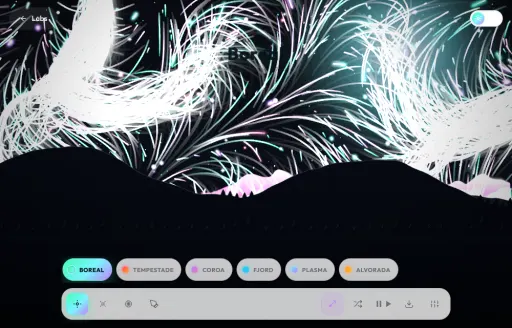
Noite polar: cortinas de oxigênio, fitas de plasma e um fiorde que reflete o céu
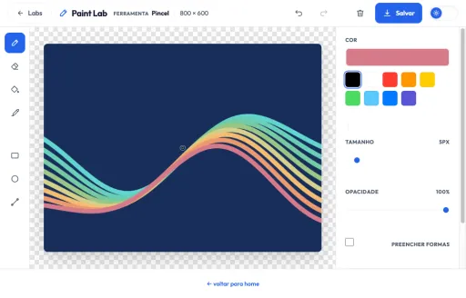
Desenho digital com pressão de caneta, camadas, zoom, balde com tolerância e autossalvamento
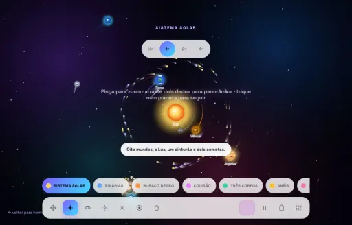
Órbitas, colisões e buracos negros com integrador simplético — de α Centauri ao Sistema Solar
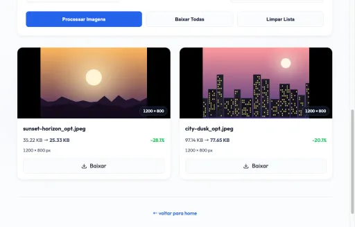
Comprime, redimensiona e converte imagens em lote (JPG, PNG, WebP, AVIF) com antes/depois e ZIP
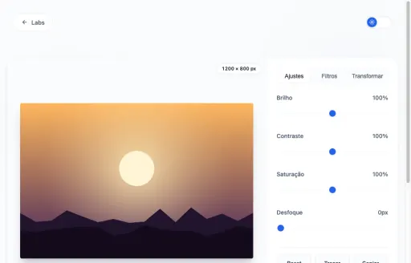
Editor de fotos não destrutivo: recorte com proporções, 20 filtros com intensidade, ajustes de luz e cor e desfazer ilimitado
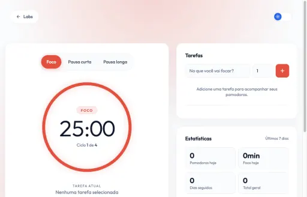
Timer de foco com tarefas, estatísticas, sons e notificações do navegador
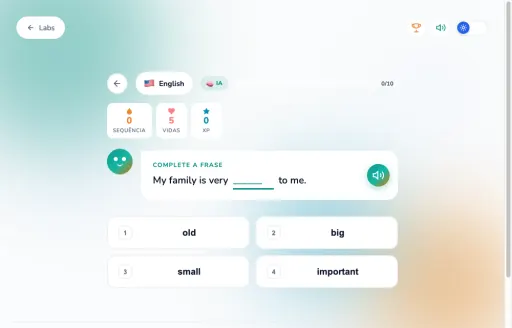
Aprenda idiomas de forma interativa com pronúncia por voz e múltiplas línguas
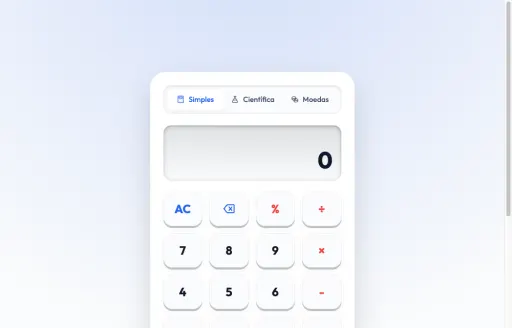
Calculadora com precisão decimal exata, precedência, modo científico, histórico e câmbio ao vivo
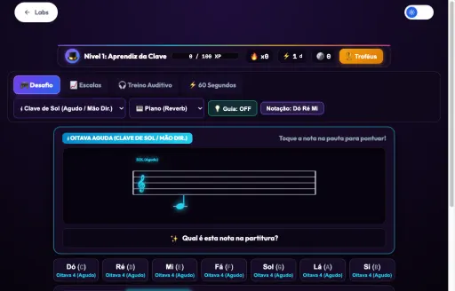
Aprenda a ler notas, partituras e escalas com gamificação, sintetizador de áudio e troféus interativos
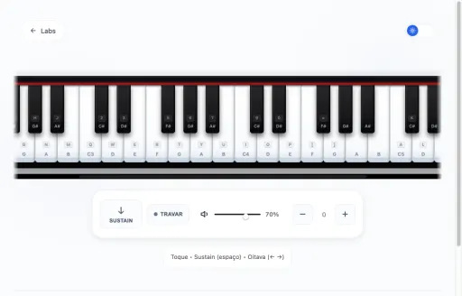
Piano de 4 oitavas com timbre de cordas e martelo, sustain de verdade, multitoque e MIDI
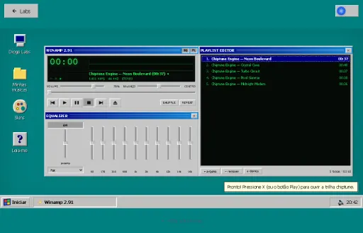
Clone do lendário player MP3 com visual clássico e equalizador
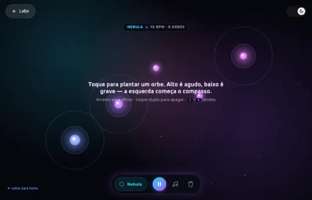
Constelação musical: plante orbes — altura é nota, posição é tempo, pulso no BPM
Tente outro termo ou remova os filtros.